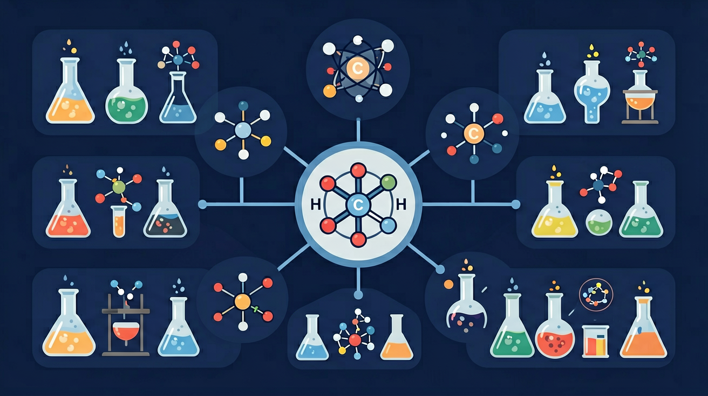

Gallery
v1.1.0 · skill v7.14.0
怎样从原子得失电子或共用电子判断物质中是什么化学键？
小美在厨房发现食盐倒入水中会消失，但油滴入水却形成分层。她观察到食盐溶液能导电，而糖水却不能。这些现象背后隐藏着不同微粒间的相互作用方式。
知道食盐由钠和氯组成，了解溶解现象
混淆离子键与共价键的形成条件
分析不同物质微粒间的结合方式
离子晶体熔点较高，固态离子不能自由移动而不导电，熔融或溶于水后可导电。分子晶体熔沸点主要受分子间作用力影响；共价晶体中原子以强共价键形成空间网状结构，通常硬度大、熔点高。解释性质时必须说清“克服的是哪种粒子间作用”。
固态 NaCl 不导电的直接原因是？
成键原子电负性不同会产生极性共价键，电子云偏向电负性较大的原子。分子是否极性还取决于空间构型：各键偶极矩若因对称性抵消，分子可为非极性。判断流程应是“先看键极性，再画结构，最后做矢量合成”。
H₂O 含极性 O—H 键，且分子呈折线形，因此 H₂O 分子？
离子键是阴、阳离子之间的静电作用，共价键是原子间通过共享电子对形成的强相互作用。判断成键类型不能只背“金属+非金属”，还要看实际微粒与结构；含原子团的盐既有离子作用，原子团内部又存在共价键。
下列物质中既含离子作用又含共价键的是？
先选一个你关心的问题。后面的例子、提示和 AI 学伴都会围绕这个问题来帮你推进。
选择或输入后，本课会围绕你的问题展开。

本课任务：搭建 CO₂、H₂O、NH₃，记录电子域数、空间构型和键偶极能否抵消，解释分子极性差异。
写清自变量、因变量和至少两个保持不变的条件，避免同时改变多个因素后无法归因。
至少记录三组带单位的数据或三个可复查的现象，不用“变大了”“更明显”代替证据。
用本课公式、粒子模型或受力关系解释趋势，并指出结论成立所依赖的模型条件。
换一个参数或真实情境预测结果，再用仿真检验；若不一致，回查变量、单位和边界条件。
化学键是相邻原子间强烈的相互作用，主要有离子键、共价键和金属键。离子键是阴、阳离子间静电作用；共价键是原子间共用电子对；极性共价键中电子对有偏移。化学键的断裂与生成伴随能量变化。
活泼金属与活泼非金属易形成离子化合物（离子键）；非金属之间多为共价键。用电子式分析成键。极性：同种原子非极性共价键，不同原子极性共价键。
常见误区：常见误区是认为共价化合物中没有极性，或把离子化合物中的所有作用都当成分子间作用力。
H₂O 分子中 O—H 键属于？
记忆锚点：金非多离子，非非多共价；同种非极性，不同看偏向。
易错提醒：常见错误：只要含金属就一定说成离子键。实际判断还要看组成、结构和电负性差，复杂物质可能同时含多种作用。
理解化学键的基本概念与分类，掌握离子键、共价键的形成过程与本质区别，能分析简单分子的极性特征
氯化钠晶体导电实验：固态NaCl不导电，熔融态NaCl导电，证明离子键中存在自由移动的离子
先画出原子结构示意图，通过电负性差值判断键型（>1.7为离子键），再用电子式表示成键过程
误认为所有含金属元素的化合物都是离子键（如AlCl3是共价化合物），忽略电子对偏移程度判断极性
课堂任务：请用“现象/文本/地图/实验数据 → 关键证据 → 学科解释 → 迁移应用”四步，重写一个关于「化学键：原子为什么要连在一起？」的新问题。
不要只看结论。动手改变变量后，再用一句话解释画面为什么变了。
识别并写出本节核心定义、公式或分类标准。
把本课标准用于一个实验数据或真实生活场景。
设计一个反例，说明常见错误为什么站不住脚。
如果你能解释“怎样从原子得失电子或共用电子判断物质中是什么化学键？”，这节课就真正过关了。